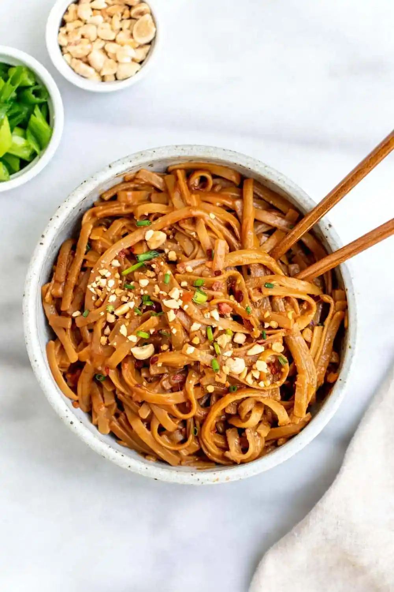

Spicy Peanut Butter Noodles

In this recipe I will describe how to prepare these easy and delicious peanut butter noodles.
This dish is perfect for days on which you crave a hot meal but you don't want to cook for a long time. You can easily
prepare this meal in as little as 15 minutes. Here I'll show you how to do this.
Ingredients
- 1 pack instant noodles
- 1-2 tbsp neutral plant oil
- 1 tbsp peanut butter
- 1 garlic glove
- 1 tsp chili flakes
- 1 tsp grated ginger
- 1 tsp sesame seeds
- 1 tsp sweetener (syrup, sugar, etc.
- 1 tbsp soy sauce
- Optionally any veggies you want to add.
Steps
- Heat up the plant oil in a pan.
- Mix garlic, chili flakes, ginger and sesame seeds in a bowl together.
- Pour the hot oil on top.
- Add peanut butter, sweetener and soy sauce and mix it all well together.
- Cook the instant noodles as described on the packaging.
- Add noodles to the sauce and mix well. Add water if needed.
- Add fired veggies you want to add.
- Serve and enjoy!